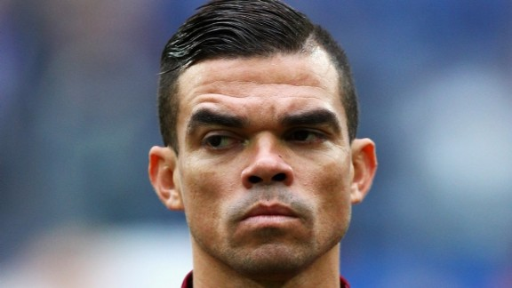

Pepe wijst Besiktas met eerste doelpunt in Turkse dienst de weg
« Vorige  Naar Nieuws »Besiktas heeft in de eerste speelronde van de Süper Lig zonder al te veel problemen weten af te rekenen met Antalyaspor. De Zwarte Adelaars waren zondag met 2-0 te sterk voor de club uit de badplaats, mede door een doelpunt van Pepe. Het was voor de Portugees de eerste treffer in Turkse dienst.
Met onder anderen Ryan Babel in de basis hoopte Besiktas snel afstand te nemen van Antalyaspor, maar in het eerste half uur kwam men niet verder dan een kopbal van Pepe tegen de lat. Onder toeziend oog van bondscoach Mircea Lucescu slaagde Besiktas er in het vervolg van de eerste helft nauwelijks meer in om serieus gevaarlijk te worden voor het doel van keeper Ruud Boffin, maar in de slotseconde was het dan toch nog raak. Pepe kopte bij de tweede paal raak na een vrije trap van Caner Erkin.
In de tweede helft nam Besiktas verder afstand van Antalyaspor, want Cenk Tosun benutte na ruim een uur spelen een strafschop nadat Diego Angelo een overtreding op de spits had begaan. Besiktas sleepte de zege over de streep en heeft nu net als Kasimpasa, Malatyaspor, Trabzonspor, Akhisar en Medipol Basaksehir drie punten na één wedstrijd.